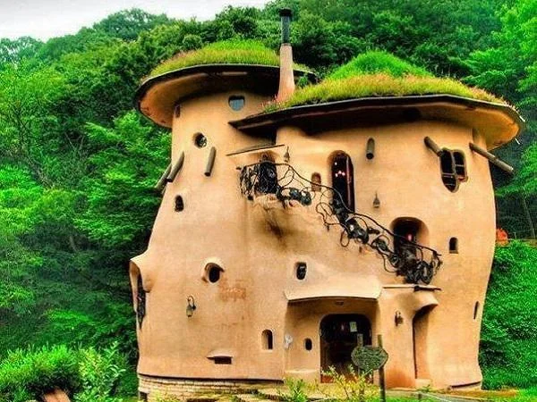
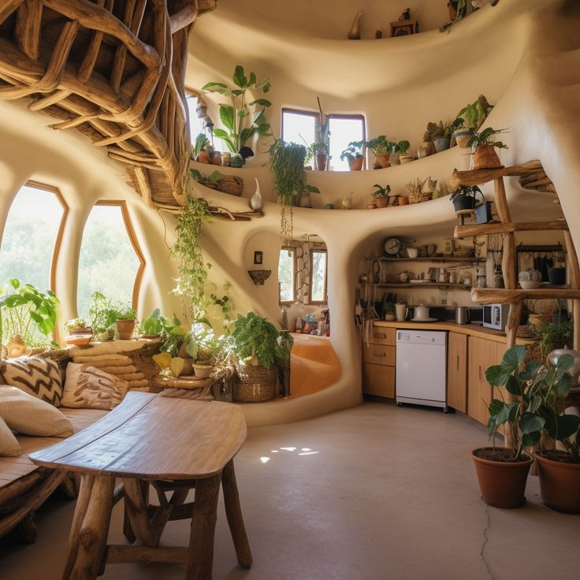
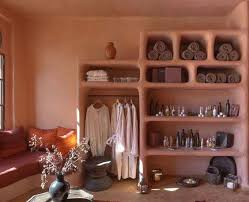

Back to top

Cob houses have been around for centuries. Many builders throughout history, from ancient times to this very day, use methods such as this. Being one of the first building mechanisms in the evolution of humanity, there is a ton of history behind the cob house structure. The first ones were seen in as early as the 13th century, and were originally found in England and the UK. This technique quickly spread to different parts of the world, and is now the base of many ancient architectural structures that still stand today! These buildings can also be resistant to fire, certain insects, fungus, etc., in contrast to our modern housing.
The cob foundation is very easy to make and construct with, as it consists of 3 simple ingredients: mud or clay, sand, and straw. The combination of these when they are accurately proportionate should result in a thick, clay-like paste that is sculptable and suitable for building up, and hardens like cement. Between the layers of the mixture, or between the “walls,” homes are insulated with hay or straw stacks, and they remain cool in the summer and warm in the winter; making these homes suitable for most climates. Once constructed, it can take about 6-9 months to “cure” or harden and be livable. The whole process can take up to a couple years, but is not much different from a regular wood and cement home. I think this is worth it, with the time, energy, and low finances it takes to build these, the total costs can heavily be outweighed by the benefits.

You may think this is relatively rustic, but it is not much different from a standard built home. Bugs can get in no matter what you do. Cob mix is solid, unless poorly built, the walls are essentially seamless, rounded and can be sculpted around any surface or appliance (window, door), which makes this building style very flexible to your dream home ideas. These houses are simple, but with a solid design plan can be as extravagant or intricate as one wants! I have seen various types of designs, and some people even add artwork sculpted out of the cob mixture on the house side of the home; who does not want built in artwork! Compared to standard wood and cement houses, the cob home does not take nearly as much time, energy, or money to build. And, they can be made with all sorts of low cost, or even free recycled materials- you just need to gather them! Many cob home builders may use things like old tires to help them create a more structured design, thrifted windows (of any size since you can simply mold the cob mix to any desired shape or scale), even old different colored wine bottles to create unique lighting effects inside as a window or light source. You may not even need to buy large, bulky (physically and financially) furniture like a couch that may or may not fit through the floor… you can sculpt seating areas right from the mixture, and cover with blankets or cushions! This would help you save a big chunk of money, as the costs of building a nice, near 1000 square foot cob home, completely designed and constructed by the way of your choosing, would be equal to or less than just the down payment of a regular house. So, if you still think cob homes are too rustic, think again. They can include pretty much anything you already have space for in your home, like electricity, plumbing, heating or a furnace; and even some extra components, like built-in shelving, furniture, etc., as well as a space unique to any other house on the market!

Off-grid living has always interested me; a lot of days I find myself thinking about how many “luxuries” we have in America especially, and what the government is actually supplying us in terms of goods that benefit our well-being. Living in the U.S. can be difficult at times; it feels so hard to simply care about the state of our world, when so much around us is polluting it, sometimes it is inescapable. Since we do not have any policies that ban genetically modified food, regulations on plastic use and production, and little effort to ensure our air and water sources are clean, it can be difficult to feel like we are pursuing a healthy life. So for me, it helps knowing that there are ways to combat this, and these ways have been used for centuries! Residing in a cob home is yet another way one can be more conscious of their own environmental footprint. Taking care and being conscious of our home is just as important as it is to do so with ourselves! Sometimes, we must resort to our roots to be able to move forward as a collective.
I started thinking about the concept of success. How does society define it, and how does that differ from what I think it should be? Can everyone’s version of it be different, or do I just have to play along in the game that does not give me much benefit? I will not say I am not grateful for my life- I am very lucky to be where I am in all aspects and I have a lot more than most. But that is the thing- what do I need that I do not already have? Why are we striving for more THINGS rather than more happiness and light in the world? A big house, a fancy car, ridiculously expensive clothes that deteriorate within a year. Why do all of these things mean so much to us, to society as a collective whole?
Because I always have these thoughts in the back of my brain, it is sometimes hard to move forward. However, seeing eco-friendly options becoming more popular and talked about helps me feel better about the state of the world, and how my future could turn out. I would love to someday have a self-sustaining home that I could completely design myself! Being conscious of the environment is being conscious of yourself, and there are many steps one can take to head in this direction. The world deserves better, as it provides so much for us and we take much more than we need. Maybe the key to success is not material abundance, but internal abundance and material simplicity.